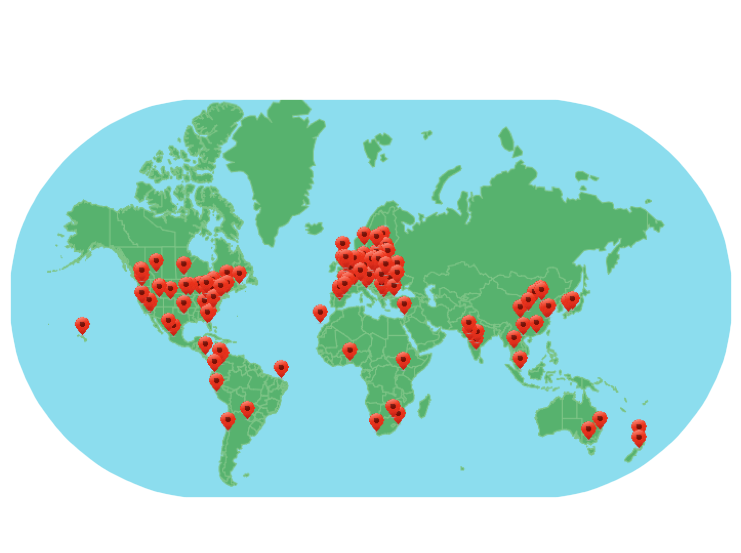

Global Day of Code Retreat
- #gdcr14
- #lscc
- @coderetreat
- @londonswcraft
Introductions
- Tell us a bit about yourself
- What is your name?
- What is your day to day language?
- What do you hope to get from today?
This year's Global Day of Coderetreat supports CoderDojo. Any funds not used to support GDCR will go to CoderDojo.
CoderDojo is a global volunteer-led community of free programming clubs for young people between 7 and 17.
CoderDojo gives young people all over the world better access to the “Magic behind the technology”
137 locations / 2000 developers

Write the best code you can!
Ground Rules
- Session: 45 minutes + 10 minute retro + 5 min break
- Pair-programming is necessary, as the knowledge transfer contained in that activity is essential to
the practice
- Prefer using Test-Driven Development (TDD)
- After each session, pairs should be swapped
- After each session, code must be deleted, not put in a branch, not stashed, just deleted with no
trace left
Conway's Game of Life
The universe of the Game of Life is an infinite two-dimensional orthogonal grid of square cells, each of
which is in one of two possible states, live or dead. Every cell interacts with its eight neighbors,
which are the cells that are directly horizontally, vertically, or diagonally adjacent.
Conway's Game of Life
At each step in time, the following transitions occur:
- Any live cell with fewer than two live neighbours dies, as if caused by underpopulation.
- Any live cell with more than three live neighbours dies, as if by overcrowding.
- Any live cell with two or three live neighbours lives on to the next generation.
- Any dead cell with exactly three live neighbours becomes a live cell.
Tips
- Start with the language you are most comfortable with
- In each session pair with someone you have not paired with before
- Focus on learning not finishing
- Respect your pair
- Shake hands before and after the session
Schedule
- 09:00 - Kick-off
- 09:15 - Session #1
- 10:15 - Session #2
- 11:15 - Session #3
- 12:30 - Lunch
- 14:00 - Session #4
- 15:00 - Hangout with a code retreat somewhere else on the planet
- 15:15 - Session #5
- 16:15 - Session #6
- 17:15 - Closing circle
- 17:45 - Head out for a drink
Session 2
The constraints
- Use only one level of indentation per method
- Don’t abbreviate
Session 3
Object Calisthenics with Brutal Refactoring
- Use only one level of indentation per method
- Don’t use the else keyword
- Wrap all primitives and strings
- Use only one dot per line
- Don’t abbreviate
- Keep all entities small
- Don’t use any classes with more than two instance variables
- Don’t use any getters/setters/properties
- Use first-class collections
Session 4
Baby Steps
- Setup source control repository.
- Setup a timer for 3 minutes interval when you start.
- Refactor code or write test
- If the timer rings and the refactoring/test is not complete then revert in source control and start over.
- If the refactoring/test is complete before the timer rings then commit in source control.
- Restart the timer (no discussions in between timers).
- Go to 3.
Session 5
Only use pen and paper for first 10 minutes.